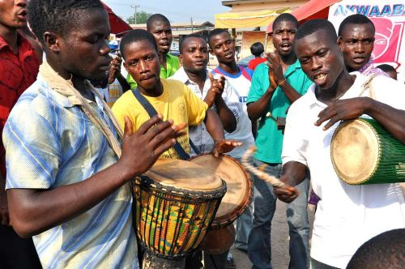
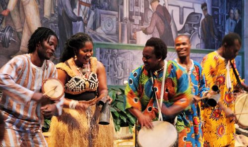

Ghana


The music of Ghana includes many different styles, both traditional and modern. It is influenced by the country's different regions and cultures. One of the most popular modern styles is highlife, which mixes African rhythms with Western instruments and was the main genre for many years.
Traditional music in Ghana varies by region. In the northern areas, music often includes string instruments, flutes, and drums, with strong rhythms and singing. In the southern and coastal areas, music is more connected to social events and uses drums, bells, and group singing, often with complex rhythms.
Music is very important in Ghanaian culture and is used for ceremonies, festivals, communication, and storytelling. Drumming and dancing are closely connected, and certain drums can even be used to send messages.
Over time, Ghanaian music has changed and mixed with other styles. In the 1990s, hiplife developed by combining hip hop with traditional Ghanaian music. More recently, styles like Afrobeats have also become popular.
Overall, the music of Ghana is a blend of traditional sounds and modern influences, showing the country's rich culture and ongoing creativity.